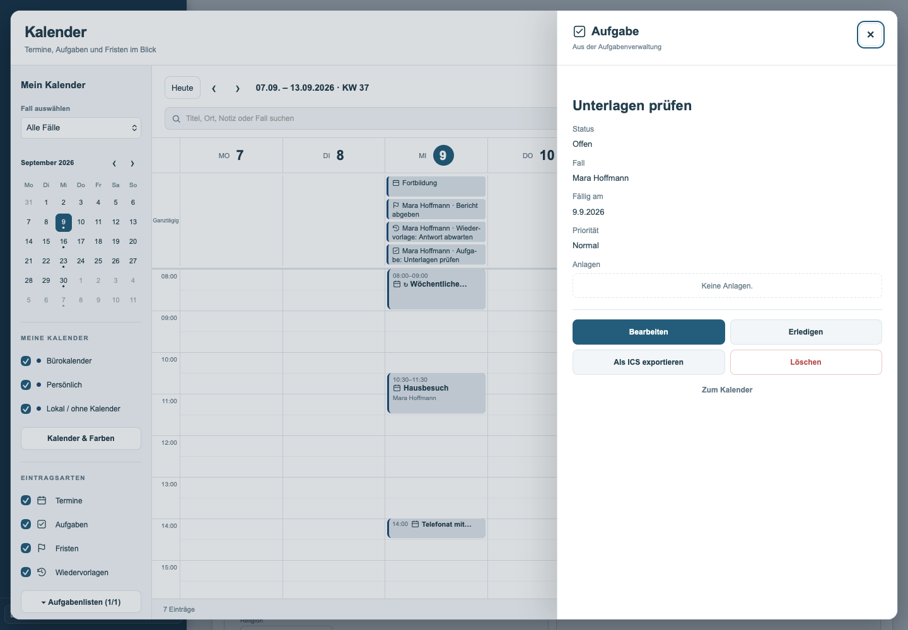
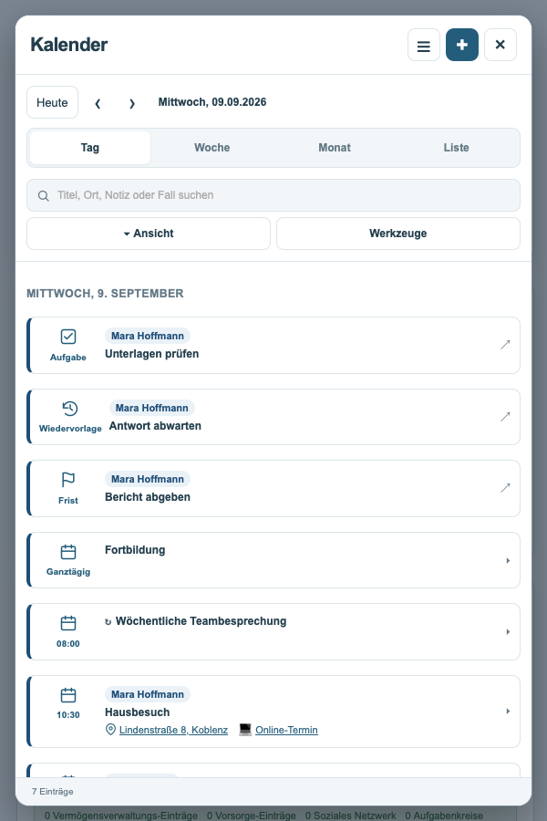
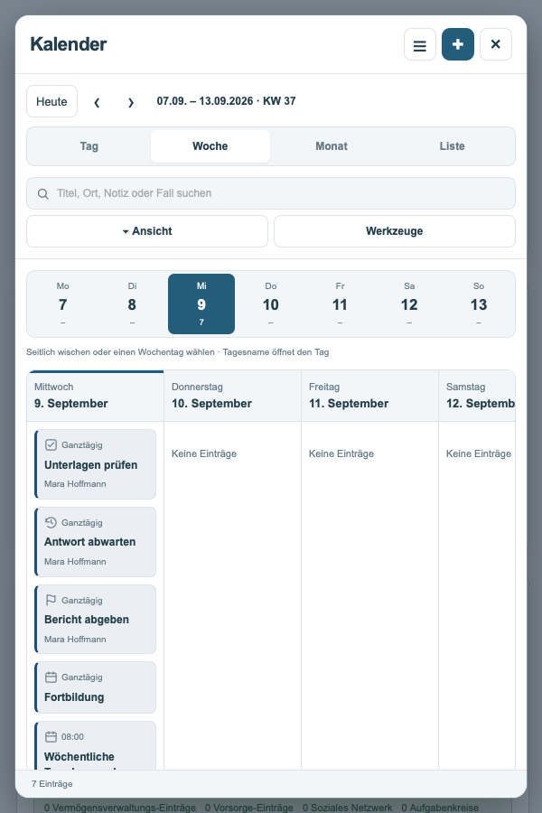
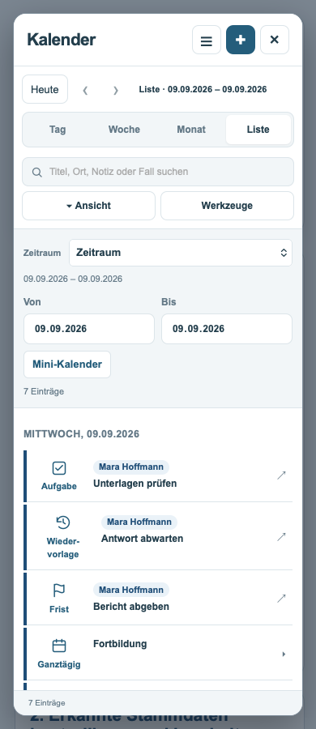
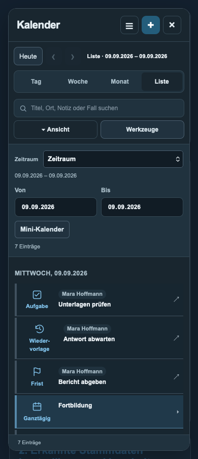
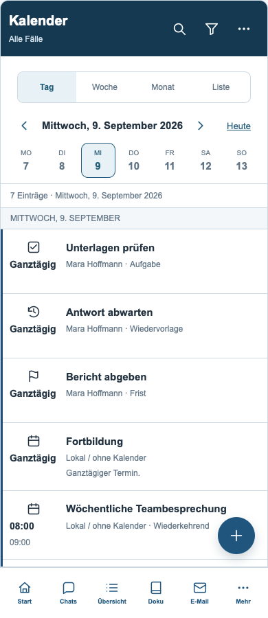
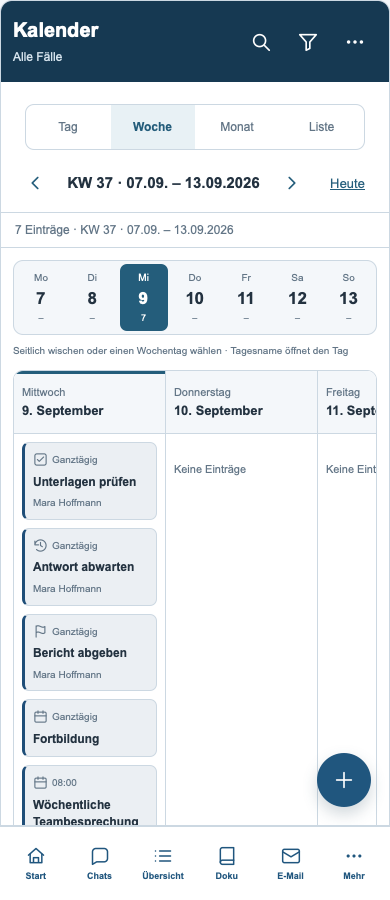
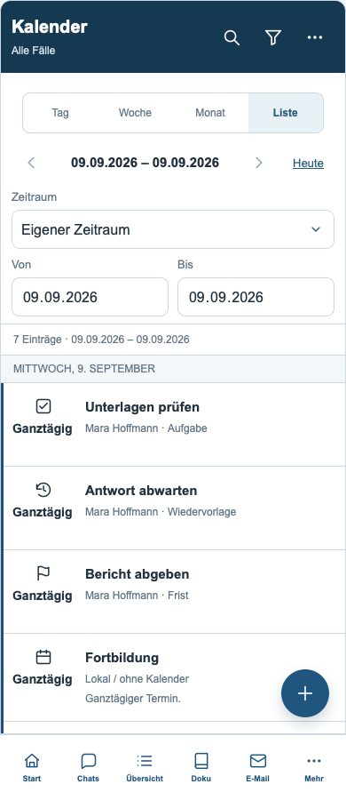
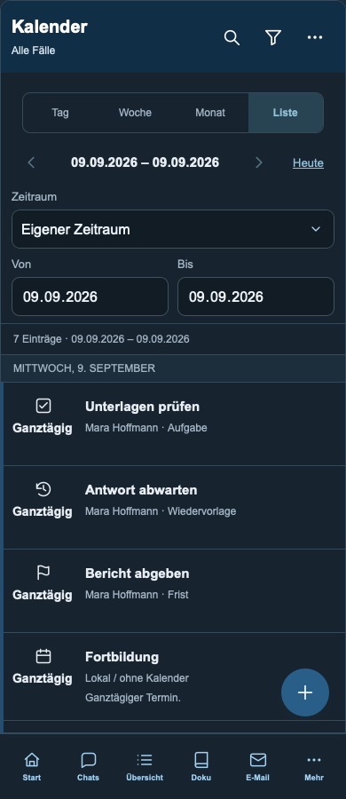

Kalender – korrigierte Ansichten
Detailbereich: Aktionen in zwei geordneten Reihen
Schmales Fenster: Tag
Schmales Fenster: Woche
Schmales Fenster: Liste
Schmales Fenster: Liste im Dunkelmodus
Smartphone: Tag
Smartphone: Woche
Smartphone: Liste
Smartphone: Liste im Dunkelmodus